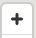

Map¶
The map view shows the status of all the links and nodes in the network. The legend shows the status of nodes, links, and sites in the network.
Navigation¶
Icon |
Function |
Description |
|---|---|---|
N/A |
Pan |
Left click + drag mouse |
|
Rotate |
Right click + drag mouse, click the compass button to reset rotation to North |
 |
Zoom |
Left click + drag mouse |
N/A |
Search |
Enter a node name, site name, or address in the search box and choose it from the typeahead to select it in the map and zoom to its location. |

TGNMS search, zoom, compass, and annotation tools¶
Sidebar¶
Click the title of the sidebar menus to expand or collapse them.
Overview¶
The overview menu gives quick information about the state of the network.
 icon to change the window length.
icon to change the window length.Node / Site Details¶

Site details menu¶
By clicking a site on the map, you can view and edit its details. The sectors are shown in blue and correspond to their names below. Choosing one of these selectors takes you to the node details page. On the node details menu under “View Actions” you can issue commands to the node to do tasks, including: reboot the node, restart minion, and edit the topology.
Node details menu¶
Map Layers¶
The map layers menu lets you control the elements shown on the map. The details menu has the following options:
Links Overlay - Change the value used to color links on the map and update the legend accordingly.
Sites Overlay - Change the value used to color sites on the map and update the legend accordingly.
Nodes Overlay - Change the value used to color nodes on the map and update the legend accordingly.
Areas Overlay - Group nodes with a color by IP address prefix.
Map Style - Choose between satellite and street view for the map tiles.
The historical and custom menus can be used to view the statistics on the map for a particular time in the past.

Map layers menu¶
Annotations¶
The annotations tool can be used to mark up the network map to include notes, potential network revisions, issues or plans on the map itself. The tool includes shapes, lines, and sites as well as measurement tools.
Activate the annotations tool by clicking the pencil¶
Click the pencil in the top left to activate the tool. This will add the “Annotation Layers” menu to the sidebar where you can configure layers for annotations, select colors for annotations, and give them names. Annotations in different layers can be toggled independently to help organize the annotations.

Annotation tools on the left and layers on the right¶
The annotation tools are:
Line - Click and move mouse to draw a line. Click again to add a point, double click to end line.
Polygon - Click and move mouse to draw points of a polygon. Click again to add more points, double click to end the polygon.
Point - Click to add a single point to the map.
Delete - Select an annotation in the map, then click the trash icon to remove it.
Group - Shift + click on multiple annotations to add them to a group with a single name.
Ungroup - Select a group of annotations and ungroup to break them back into individual annotations.
Tables¶